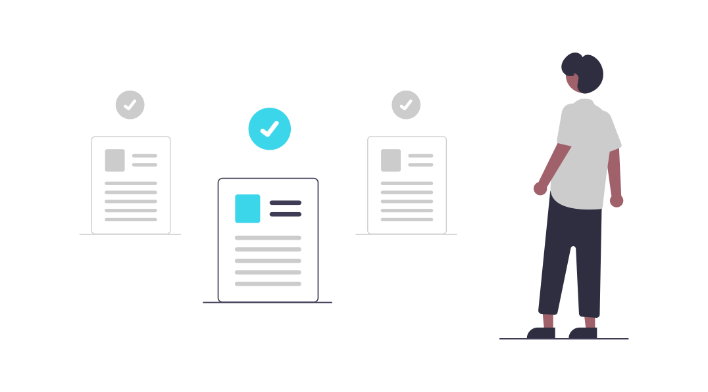
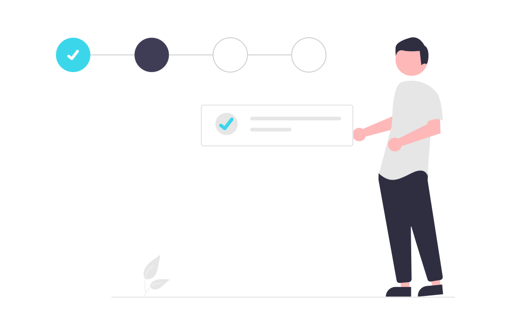

O projeto "Modernização do Controle de Advertências e Suspensões" tem como objetivo principal a substituição do antigo sistema baseado em planilhas por uma solução digital integrada e eficiente para gerenciar advertências e suspensões no ambiente de recursos humanos. Anteriormente, o processo de registro, acompanhamento e documentação dessas ações disciplinares era conduzido manualmente, resultando em ineficiências, erros e dificuldades na rastreabilidade.
Medidas Disciplinares

A nova solução desenvolvida oferece uma abordagem centralizada e automatizada para lidar com advertências e suspensões, melhorando a transparência, a precisão e a velocidade do processo. O sistema permite o registro detalhado de ocorrências disciplinares, fornecendo informações essenciais para gestores, recursos humanos e colaboradores envolvidos.

Com a implementação deste projeto, a empresa alcançou uma melhoria significativa na eficiência e na qualidade do processo de gestão de advertências e suspensões. O uso de uma solução digital moderna reduziu erros, agilizou as operações e proporcionou maior visibilidade e controle sobre as ações disciplinares, beneficiando tanto os colaboradores quanto a organização como um todo.
- Data do Projeto: Janeiro de 2022
- Categoria: Gestão Empresarial
- Cliente: Tryevo
Conduza a sua empresa para o futuro da gestão empresarial com nosso portal abrangente, fornecendo não apenas informações, mas insights acionáveis que impulsionam a eficiência, a harmonia na equipe e o sucesso sustentável.
Voltar ao início